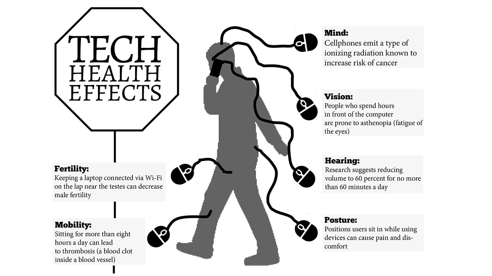

Technology Both an ability and a disability
-by Prasanna Ratna Kansakar(13th January 2020)Technology is being used in almost every aspect in our day to day life to accomplish specific tasks. Technology has changed the way we work. It reduces errors caused by humans which can be caused by too much work or stress. It is used in various fields such as education, transport, economy and many more. But like everything in life it comes with its fair share of advantages and disadvantages.
An Ability
Development and improvement of technology has been going on since the dawn of civillization. Whatever technology we have accumulated is the result of millions of years of developmengt of technology. Development of technology contiued on for generation after generation only because it was beneficial to humans. The advancement in technology at the medicial field can help treat more sick people and consequently save many lives. It also helps to combat many harmful viruses and bacteria. Technology has further advanced communication systems as well and with the development of devices such as a computer, process of research has been further simplified. With the rise of internet, there is also rise in online transaction thus sales and purchases can be facilitated and possible worldwide. Exchanges are also fasters. In Similar way technology has also increased the productivity of almost every industry in the world. Things deemed impossible at one stage such as space exploration is now possible through the development of technology. Technology has not only helped the industry it has also massively helped in our daily lives. From the light we turn on in our homes to the computer we use for work all is possible due to the advancement of technology.

But Also a Disability
Technology without a doubt has a massive impact in our lives and may even be the most important part in human civilization. The number of advantages may have increased over time but so has the disadvantges. As time continues we humans and became more and more dependent to technology. A calculator may be a revolutionary discovery but current time has reached at a point where a person can't make mental calculation. Logical thinking has slowly started to disapear. Technology has also lead to creation of various weapons of mass destruction such missiles, nukes, etc. Technology has also made humans more and more lazy. People often opt to use vechiles instead of walking even if it is a short distance. Not to mention the massive environmental problems technology has lead us. As most technological discoveries aim to reduce human effort, it would imply that more work is done by machines. This equates to less work for people: the human is becoming ever so obsolete by the day, as processes become automated and jobs are made redundant. There are also problems such as addiction, negative effects to children, negative health effects etc.

Verdict
Despite the numerous disadvantages we cannot deny the fact that no matter what development of technology is an absolute necessity. The advantages out weigh the advantages and we have to move further with new technolgy that is going to help us in further developing the civilization. However, we cannot completely ignore the disadvantages.The use of technology certainly needs rule and new laws. We need to make sure technology is used in a safe and sustainable manner. We also need to make sure that freedom of technology be properly implemented for certain technology. Making of technology that is harmful for us such as weapons of mass technology need to be full of restriction. In fact, regulations are difficult to implement but it is better than doing nothing.